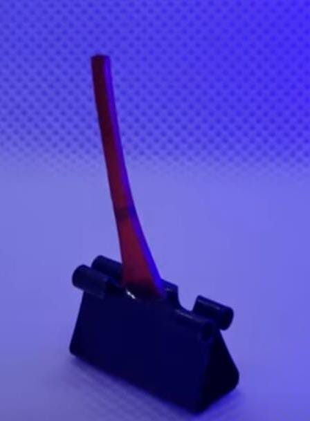
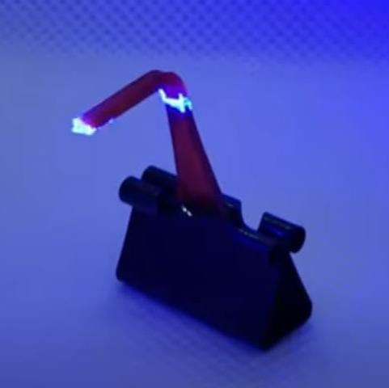
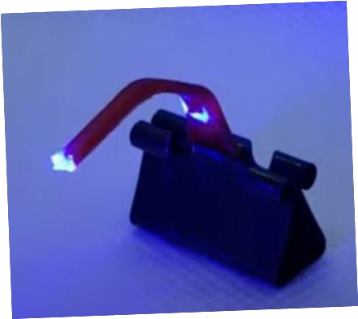
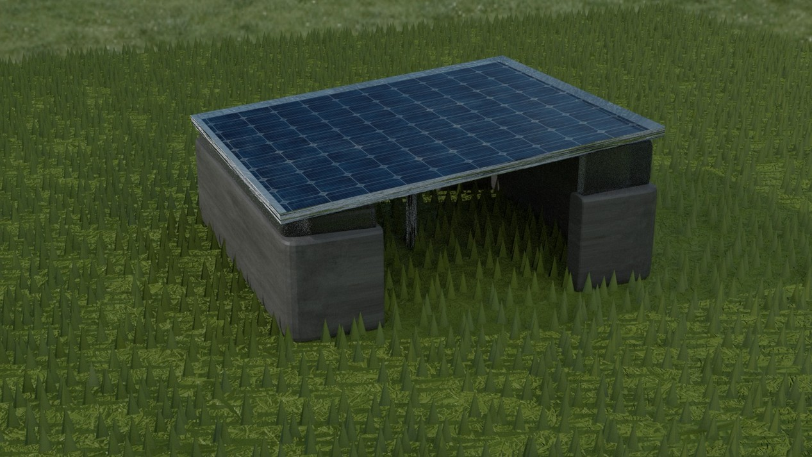
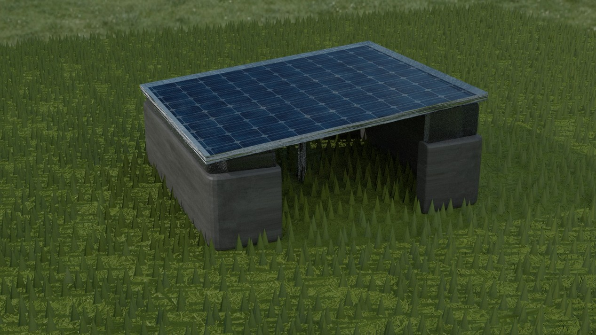
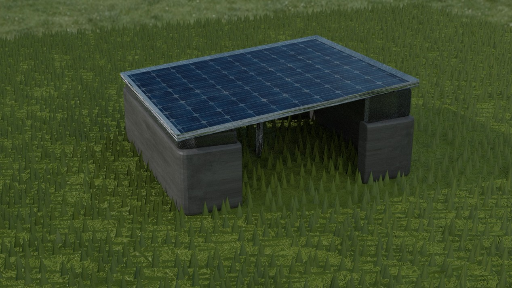

SIH1545
By Team
-KanyaRaasi
Probelm Statement
Development of a non-electrical device for tracking the movement of the sun for movement of the solar panels, increasing their efficiency.
Idea Title
- Tracking the movement of sunlight using Artificial Heliotropism
- Heliotropism is the property of an object or plant to grow or move in the direction of sunlight. Ex-SUNFLOWER
- We are going to use Liquid Crystal Polymer and this acts as an compression machine making the Solar panel bend towards the sun.
- The polymer compresses when the sunlight hits the polymer and comes back in place when there is no sunlight hitting it, making the panel to come back in place
- We are not using Exisiting Technologies. We are trying to bring in a plant property into Artificial Usage.
TECHNICAL APPROACH
- Spring Technology
- Elastomer Technology
- Liquid Crystal Polymer
Working images



 


FEASIBILITY AND VIABILITY
- There is no removal of materials,we can easily install this polymer to our existing solar power plants also.
- This Material is not ready made and not easily found .It should be made in laboratories
- With proper inks and heavy usage of this polymer, can make the polymer easily available
IMPACT AND BENEFITS
- Places where sun doesn’t set like the North of arctic circle,we can use this kind of model to get its maximum utilization
- When we use a unidirectional solar panel we generally use just 43% of solar energy but this kind of hybrid model we can achieve more activity from the panel
RESEARCH AND REFERENCES
- Renewable Energy Sources And Emerging Technologies-DP Kotari,KC Single, Rakesh Rajan-TEXTBOOK
- Renewable and Sustainable Energy Reviews 13(2009) 1800-1818
- Nanomaterials-Embedded Liquid Crystal Elastomers-
- Automated photo aligned liquid crystal elastomer film fabrication with a low-tech ,home built roboric work station
- Design and Applications of Light Responsive Liquid Crystal Polymer Thin Flims
Our Working Demonstration:
Feel our working demonstration by changing the sun's direction: